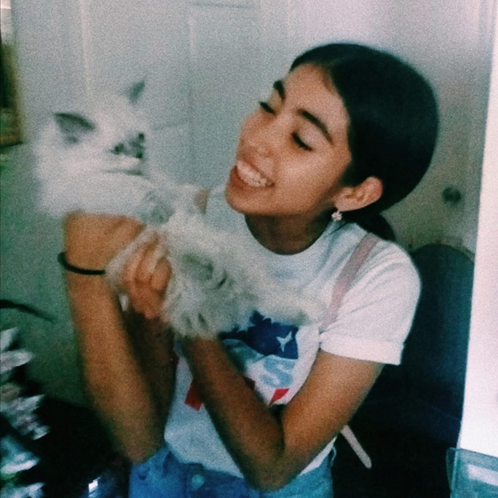

ANDREA NICOLE GOMEZ HERNANDEZ
Estudiante de preparatoria que ama editar videos cortos
Proyecto en la materia de biología donde se utilizaron plantas para llevarlo a cabo
Se realizó una práctica en la clase de biología que formaba parte del porcentaje de proyectos en el tercer semestre. Se llevo a cabo durante dos horas de la materia ya mencionada anteriormente, los materiales eran bastante sencillos de conseguir y se requería la observación de la reacción del alcohol con las plantas para ver como la Clorofila se creaba, al final de la práctica el maestro comentó que la práctica formaría parte del proyecto parcial. Realizar el reporte de la práctica fue bastante sencillo ya que básicamente se tenía que explicar el proceso que habíamos observado, los materiales y el objetivo de la práctica.
Estudiante de preparatoria que ama editar videos cortos